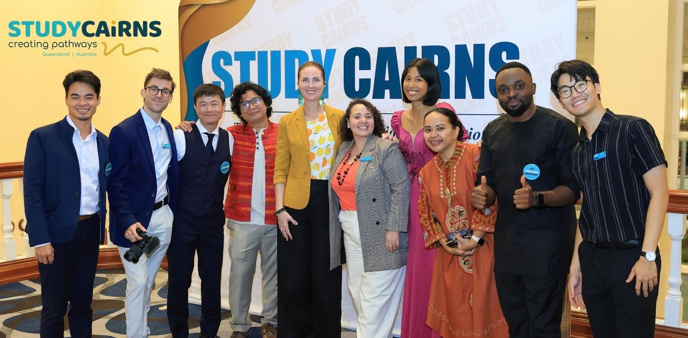

Key Chapters
Software Developer (Nanocodes)

At Nanocodes, I applied my full-stack development skills to create scalable digital solutions, blending creativity with technical precision to deliver real-world impact.
Machine Learning & Data Engineer (JutaLab)

At JutaLab, I designed and implemented machine learning models that transformed raw data into actionable insights, fueling innovation and smarter decision-making.
IT Support Engineer & Lead (Risk 2 Solution)

As an IT Support Engineer and project lead, I safeguarded critical systems, automated workflows, and guided teams to deliver on high-impact IT initiatives, fully aligned with our mission of “protecting what counts.”
Ambassador & Student Leader (Study Cairns, JCU)
Serving as a Study Cairns Ambassador and Student Buddy at James Cook University, I proudly guided international students, led campus tours, presented inspiring speeches at JCU orientation, and represented student voices to motivate others across Cairns. In recognition of this work, I was honoured with the 2024 International Student Excellence Award.
Global Experiences

My journey has taken me beyond campus — from presenting as an ambassador to aspiring students, to leading critical IT projects, to travelling across Australia, including unforgettable moments at the Sydney Opera House and across Sydney’s vibrant cityscape.
PhD Candidate (James Cook University)

Today, I am pursuing a PhD in Artificial Intelligence at JCU, where I am focused on using AI, cloud computing, and advanced IT solutions to address urgent healthcare challenges, particularly in the area of perinatal mental health.